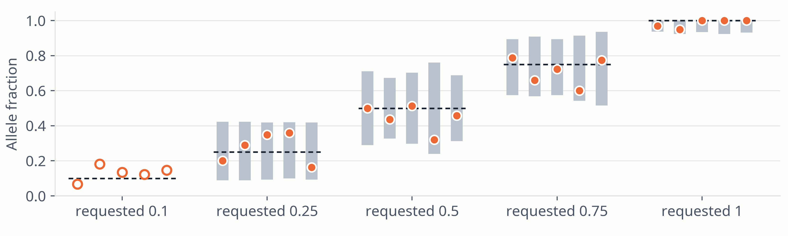

Model. X ~ Bin(n, p), n = voting fragments (one vote per pair; mates that disagree abstain), p = f(1 − 0.01) + (1 − f)·0.001
Error floor. kmin = smallest k ≥ 3 with P(X ≥ k | Bin(n, 0.001)) < 0.005: more alt reads than errors explain
Power. If P(X ≥ kmin | Bin(n, p)) < 0.99, the site is reported "too shallow", not graded
Pass. x ≥ kmin and x inside the central 99% of Bin(n, p); lower tail only when f = 1

Figure 7. The test applied to the 25 sites of the SNV run. Grey bar: measured fractions accepted at that site's depth; dot: measured fraction; hollow: too shallow (33–45 fragments; about 81 needed at f = 0.1); dashed: requested fraction. An independent re-count of every site and a re-implementation of the rule reproduce all 25 verdicts.
spike · Methods · 12 / 25